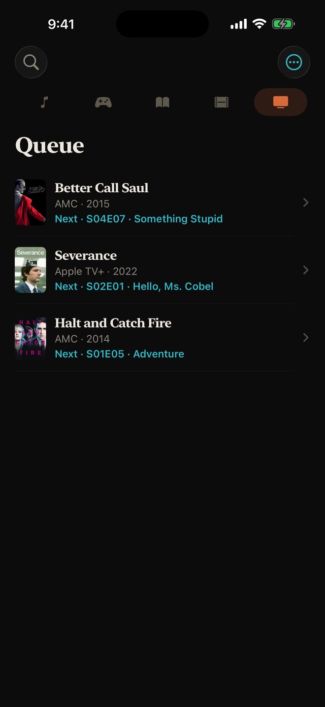
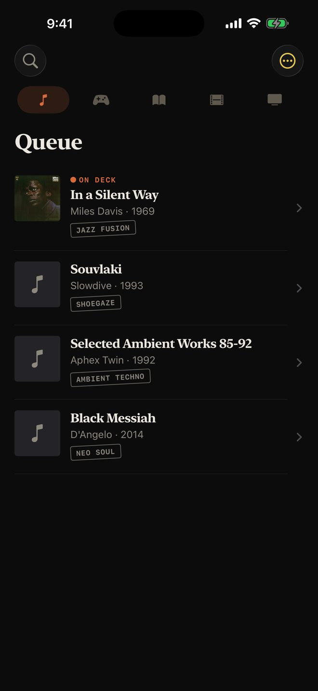
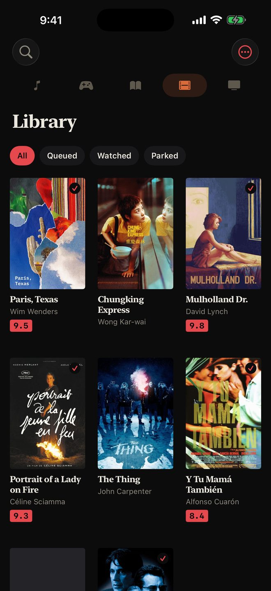

Issue 01 · iPhone, iPad & Mac
One queue for
everything you
mean to get to.
The album a friend swore by. The game still in its shrinkwrap. The novel three people have now recommended. Culture Stack holds all of it in one place — with cover art, real metadata, and a way to decide what's next.
Music
Games
Books
Film
TV
§ 01 — The app
A backlog that finally looks like something.
Five sections, one grammar. Whatever you're tracking, it queues the same way, browses the same way, and gets marked finished the same way — so there is nothing new to learn when you move from records to novels.
Queue
Everything waiting, sorted how you think about it — by year, decade, genre, artist, platform, author, director or the list it came from.
Browse
Your finished shelf, faceted the same way, with scores, notes and the artwork pulled automatically from public catalogues.
Spin
For the nights you can't decide. Pull the lever and the app picks something out of your own queue.
Feed
A quiet timeline of what the people you follow actually finished — no counts to chase, no algorithm, no strangers.
Lists
Build your own — a year-end ten, a run through a director, the stack a friend handed you.
§ 02 — On the phone



§ 03 — How it behaves
Yours, on your devices.
Your library is in your iCloud
Synced through Apple's private CloudKit database under your own Apple Account. There is no server of ours holding your collection, because there is no server.
Social is opt-in and small
Nothing is published until you sign in and follow someone. Your queue, your notes and your unrated items never leave the device.
No analytics, no ads, no trackers
Not a single tracking SDK ships in the app. Nothing you do here feeds an advertising profile anywhere.
iPhone, iPad and Mac
A native app on all three — not a web page in a wrapper — with a real Mac sidebar and keyboard navigation.
§ 04 — Pricing
Generous free. Pro when you want depth.
All five sections, unlimited items, full artwork and metadata, the queue, browse, spin, lists, the whole social layer and iCloud sync are free. Forever, not for a trial.
Pro is one purchase, two ways to make it
Monthly
$1.99 / mo
Auto-renews until cancelled. Cancel any time in Settings.
Lifetime
$19.99
Pay once. Every Pro feature, on every device you sign in to.
- Bulk import from Notes, CSV and catalogue exports
- Apple Music playback inside the app
- Every theme, not just Liner Notes
- Spin filters — narrow the wheel to a decade, genre or list
- Recap and stats, including the Sunday wrap-up
- Buddy circles
- Collection tracking for what you own
- Full data export
Coming to the App Store
Stop losing the recommendation.
Culture Stack is in final review for iPhone, iPad and Mac. Want the link the day it lands?
Email us